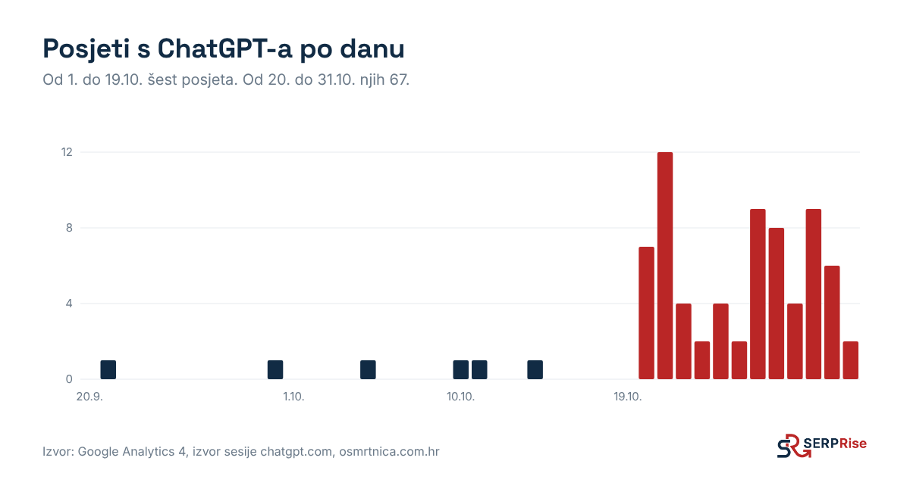

Kad AI dođe na vaš web, mora u prvih nekoliko rečenica pronaći odgovor na kupčevo pitanje: što radite, za koga, gdje i od koliko eura. Ako to mora tražiti, uzet će tuđu stranicu.
| # | Element | Kako |
|---|---|---|
| 1 | Jedna stranica po usluzi | Ne "Usluge" sa šest odlomaka, nego /implantati/, /djecja-stomatologija/. AI citira stranicu, ne web. |
| 2 | Naslov riječima iz pitanja | Ako kupci pitaju "dječji stomatolog Split", H1 i title neka budu "Dječji stomatolog u Splitu". |
| 3 | Blok "Ukratko" na vrhu | 3 rečenice: što radite, za koga, gdje i od koliko eura. To je dio koji AI najčešće prepiše. |
| 4 | Cijene u eurima | Barem "od X €" ili raspon. Ako nemate cijenu, AI za pitanje o cijeni citira tuđi cjenik. |
| 5 | FAQ s 5 do 8 pitanja | Pitanja iz Koraka 1, kratki odgovori, FAQPage schema. |
| 6 | Autor i dokazi | Ime i uloga stručnjaka, broj godina, broj klijenata, primjer projekta s brojkama. |
| 7 | Lokacija i kontakt | Adresa, grad, područje rada, telefon. Isto kao u imenicima (Korak 5). |
sameAs linkovima na LinkedIn, Facebook i profile iz Koraka 5.areaServed: "HR") i, ako možete, Offer s cijenom.WordPress: Rank Math ili Yoast dodaju Organization i FAQ schemu iz postavki. Ostali sustavi: zamolite programera za JSON-LD blok u <head>.
<div id="root">, većina AI crawlera vidi praznu stranicu.Hrvatski portal osmrtnica.com.hr imao je oko 36.000 klikova s Googlea mjesečno, ali je napravljen u Reactu: AI crawleri dobivali su praznu stranicu. 19.10.2026. uveli smo HTML za crawlere, zatim interne linkove, novi robots.txt i IndexNow. U 19 dana prije promjene portal je dobio 6 posjeta s ChatGPT-a, u 12 dana poslije 67. Bez novih tekstova i bez kupljenih linkova.

llms.txt je datoteka s opisom weba za AI alate. Ne škodi, ali na portalu iz primjera postojala je i prije, kad posjeta s ChatGPT-a gotovo nije bilo. Ne trošite na nju više od pola sata.
Kad netko pita AI za tvrtke "u Hrvatskoj" ili "u Zagrebu", AI često citira imenike i kataloge, a ne web same tvrtke. Upis je besplatan i možete ga napraviti sami u jednom poslijepodnevu.
Napravite dokument i iz njega kopirajte u svaki imenik. Podaci moraju biti isti svugdje, slovo po slovo:
Ako vam naziv tvrtke zvuči kao ključna riječ (npr. "Web Dizajn Zagreb"), ni Google ni AI ne mogu znati da netko traži baš vas. Tada je dosljednost još važnija: isti naziv, isti logo i linkovi s profila na web (i obrnuto, s weba na profile u Organization schemi).
| Imenik | Cijena | Što upisati | Zašto |
|---|---|---|---|
| Google Business Profile business.google.com | besplatno | Kategorija, usluge, radno vrijeme, fotografije, recenzije | Izvor za Google Karte, lokalne rezultate i AI preglede |
| Bing Places bingplaces.com | besplatno | Uvoz iz Google profila | Bing koriste ChatGPT i Copilot |
| Apple Business Connect | besplatno | Isti podaci | Apple Karte i Siri |
| LinkedIn stranica tvrtke | besplatno | Opis, usluge, web, zaposlenici povezani s tvrtkom | Važno za B2B i provjeru tko stoji iza tvrtke |
| CompanyWall companywall.hr | osnovno besplatno | Opis djelatnosti, web, kontakt | Hrvatski poslovni imenik koji se pojavljuje u pretragama naziva tvrtki |
| Poslovna.hr | osnovno besplatno | Opis, ključne usluge, web | Hrvatski imenik s podacima o tvrtkama |
| Fininfo fininfo.hr | provjeriti podatke | Podaci dolaze iz registara. Provjerite jesu li web i djelatnost točni | Često se pojavljuje uz naziv tvrtke |
| trebam.hr | provjeriti uvjete | Profil usluge, područje rada | ChatGPT ga je citirao za hrvatska pitanja o uslugama |
| Katalog | Cijena | Što upisati | Zašto |
|---|---|---|---|
| Clutch (clutch.co) | profil besplatan | Usluge, budžeti, klijenti, recenzije koje Clutch provjerava | Citiran u 6 od 45 naših ChatGPT odgovora o agencijama u Hrvatskoj |
| The Manifest | profil besplatan | Puni se s Clutch profila | Konkurenti koje AI citira su ondje |
| DesignRush | osnovni besplatan | Usluge, portfelj | Isto |
| GoodFirms | osnovni besplatan | Usluge, portfelj, recenzije | Isto |
Većina kataloga uz besplatni profil nudi i plaćeno isticanje. Za LLM vidljivost dovoljan je besplatni profil s recenzijama. Uvjete provjerite na dan upisa jer se mijenjaju.
Imenici govore AI-ju da postojite i gdje ste. Ali na pitanje "tko je najbolji" AI odgovara iz onoga što drugi pišu o vama: liste, članci, mediji. Imenici su nužni, ali sami nisu dovoljni. To su Koraci 6 i 7.
Za SERPRise imenike upisuje jedna osoba iz tima, sve iz istog dokumenta s podacima, i svaki upis bilježi u tablicu: imenik, datum, link na profil, broj recenzija. Svaka tri mjeseca provjerava jesu li podaci još točni.
sameAs na vašem webuNa pitanje "koje su najbolje agencije" ChatGPT ne citira stranicu agencije, nego tuđe liste. U našem testu to su bile liste poput assemblio.hr i tako.hr, uz direktorije poput Clutcha. Ako ste na listi, ulazite u odgovor.
najbolji [usluga] [grad], top 10 [usluga] hrvatska, [usluga] preporuke.Predmet: Prijedlog za vaš popis "[naziv liste]" Pozdrav [ime], pročitao sam vaš popis "[naziv]". Mi smo [tvrtka] iz [grad] i radimo [usluga] od [godina]. Za razliku od većine na popisu, [jedna konkretna razlika, npr. imamo javni cjenik / 120 recenzija prosjek 4,9]. Ako ažurirate popis, ovdje su podaci: [link na uslužnu stranicu] i recenzije: [link]. Hvala, [ime i uloga]